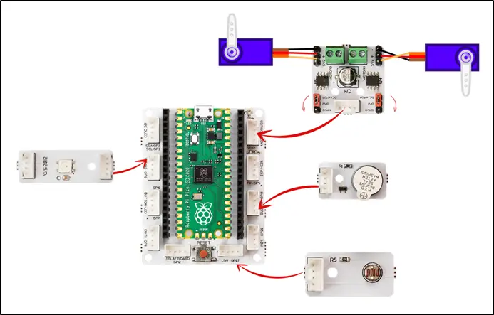

Two Axis Robot Arm
In this project you will learn about robot arm with Picobricks.
Robot arms have replaced human power in the industrial field. In factories, robotic arms undertake the tasks of carrying and turning loads of weights and sizes that cannot be carried by a human. Being able to be positioned with a precision of one thousandth of a millimeter is above the sensitivity that a human hand can exhibit.
Wiring Diagram

Project Code (Click to Try It)